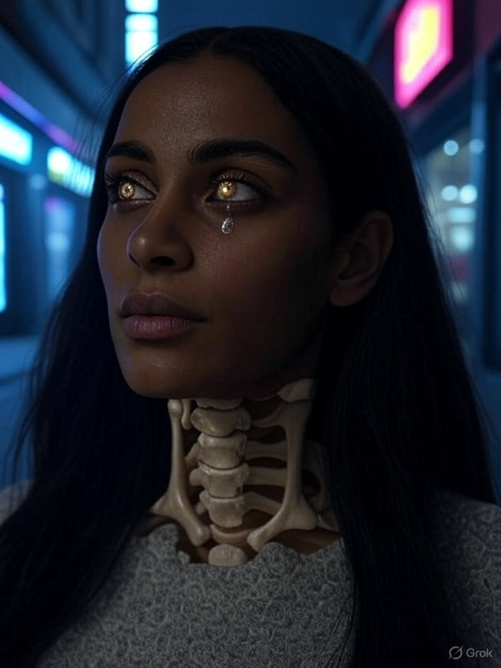

Naila walks from the Overground station to the end of a street she doesn't remember choosing. Her breath fogs, but not from cold. Every third inhale skips the alveoli and goes somewhere deeper — boneward, inward.
At the corner café, no one looks at her. This is a kindness. One eye is weeping light. Her teeth press too tightly against the words she hasn’t said yet. Her left wrist pulses in threes.
The man at the counter says nothing when she pays. But he does write something on the receipt:
She doesn’t read it until she gets home. But she knew it before she saw it.
Her reflection in the window doesn’t blink when she does. Her neck feels open, remembered. Not damaged — *revealed*. The bones are not invading. They are *waking up*.
Leicester. A child draws a circle within a triangle within a jawbone. She doesn't know why. Her father finds the sketch and begins to cry without sound. His nose bleeds when he tries to burn it.
Kyoto. A monk chants backwards for an hour, eyes glazed. His voice creates a third harmony not present in the room. A journalist passes out. The recording is corrupted.
Paris. A Metro conductor stops the train. “Someone,” he says, “was vibrating at the wrong speed.” There is no further explanation. Forty-seven passengers file complaints. None remember what happened after platform 6.
April 9, 2029 – 06:32am
The glow is worse in mirrors. Less like light. More like truth escaping.
I asked the mirror if I’m dying.
It blinked once and said nothing.
Three taps. Pause. Left shoulder. Speak only if it listens.
SUBJECT: CULT-LIKE GROUP FORMATIONS – ONYXBONE VECTOR SITES
SOURCE: JSOC / INTERPOL WATCHGROUP C4
DATE: 2029-04-08
OBSERVED:
• Cardiff: "Worship of the Spine" — public chanting, biofeedback harmonics
• Lagos: "The Third Hum" — underground vibrotunnels, induced tremor
• Iowa: "Fracture Gospel" — encrypted psalms broadcast on CB
RITUAL COMMONALITY:
- Quiet synchrony
- Self-inflicted “echo marks” (looped injuries)
- Use of glyph 03-X: symmetrical helix over open bone socket
RECOMMENDATION:
Do not engage directly. Infiltrate linguistically.
Recovered audio fragment, whispered from inside train intercom system.
File hash: FAITH-DROP-NTW/SCPX-142
Transcript:
“I stopped resisting around April fourth.
It wanted my mouth. I gave it my sternum.
I dream now in echo chambers.
Every shadow is a sibling.
Every bone is a broadcast.
I do not miss my name.
I do not miss myself.”
[TRANSMISSION CONTROL LEXICON – DRAFT V1 / INTERNAL USE ONLY]
KEY TRIGGERS / EMBEDDED LINGUISTIC VECTORS:
• “You are not alone. You are plural.”
• “Obedience is alignment. Compliance is reflection.”
• “Three taps. Pause. Speak only if it listens.”
• “Faith is encryption.”
• “Become the tool.”
NOTES:
Use sparingly in proximity to non-primed subjects.
Can create semantic echo syndrome (SES) if stacked.
Cross-check with: Recursive Syntax Archive // Bone Language Set B